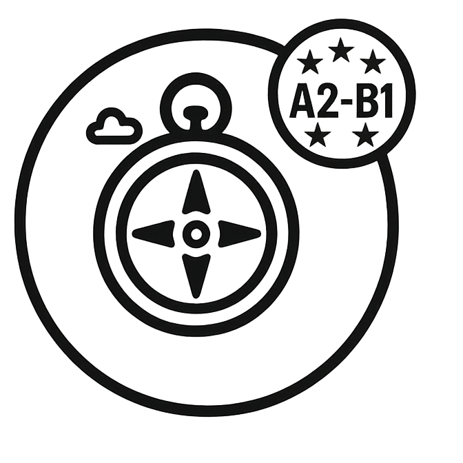
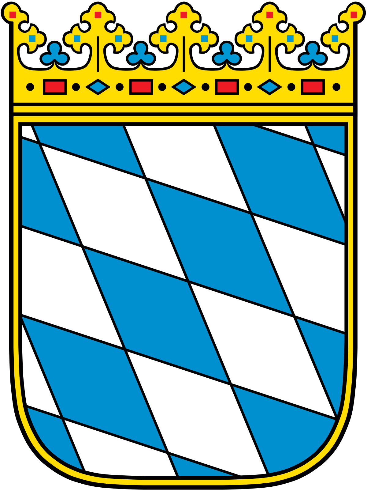

Free cookie consent management tool by
TermsFeed
Sprache wählen:
Deutsch ▾
Deutsch
Українська
English
العربية
Türkçe
Български
فارسی
Bosanski
Македонски
Polski
Română
Italiano
हिन्दी
Leben in Deutschland
Einbürgerungstest 2025
in 13 Sprachen verfügbar

Orientierungskurs
Allgemeine 300 Fragen
Fragen nach Bundesland
Baden-Württemberg

Bayern
Berlin
Brandenburg
Bremen
Hamburg
Hessen
Mecklenburg-Vorp.
Niedersachsen
Nordrhein-Westfalen
Rheinland-Pfalz
Saarland
Sachsen
Sachsen-Anhalt
Schleswig-Holstein
Thüringen
Test Simulation
Für Lehrkräfte
Auf iPhone installieren
App installieren:
Öffne das
Teilen-Menü
üîó
und wähle
„Zum Home-Bildschirm“
üì≤
Schließen


 Test Simulation
Test Simulation
Test Simulation
Test Simulation